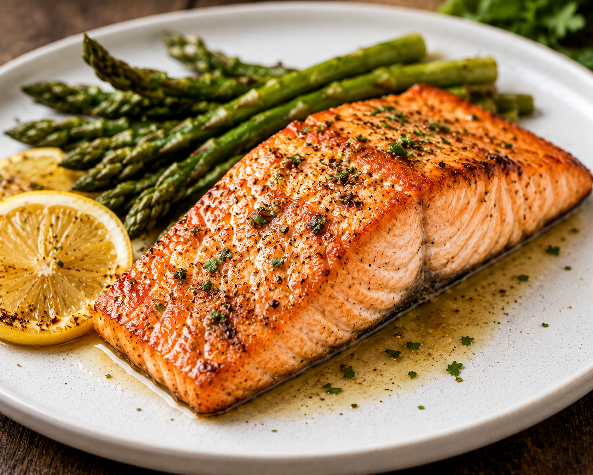

Garlic Herb Grilled Salmon

Ingredients
- 4 salmon fillets (about 6 oz each)
- 2 tbsp olive oil
- 3 cloves garlic, minced
- 1 tbsp fresh rosemary, finely chopped
- 1 tbsp fresh thyme leaves
- 1 lemon (half sliced into rounds, half juicy for squeezing)
- Salt and black pepper to taste
Instructions
- Preheat your grill or a stovetop grill pan to medium-high heat. Lightly oil the grates to prevent sticking.
- In a small bowl, mix together the olive oil, minced garlic, chopped rosemary, and thyme leaves.
- Pat the salmon fillets dry with a paper towel. Season both sides generously with salt and black pepper, then brush the garlic herb mixture evenly over the flesh side of the salmon.
- Place the salmon on the grill, skin-side down first. Grill undisturbed for about 4-5 minutes until the skin is crispy and easily releases from the grates.
- Carefully flip the fillets over to the flesh side. Grill for another 3-4 minutes, or until the salmon is opaque throughout and flakes easily with a fork.
- Remove the salmon from the grill. Squeeze fresh lemon juice over the top, garnish with the lemon slices, and serve hot!